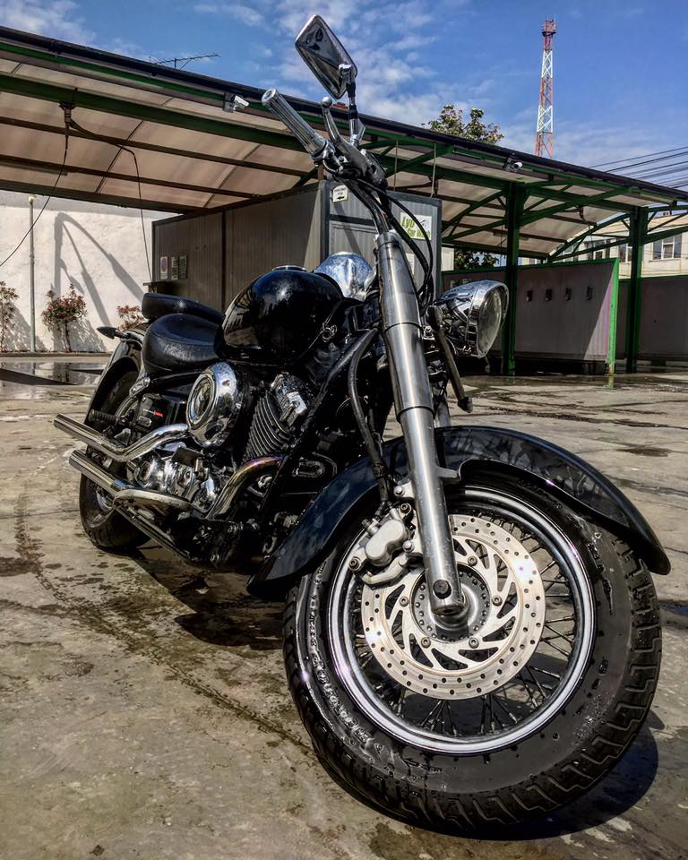
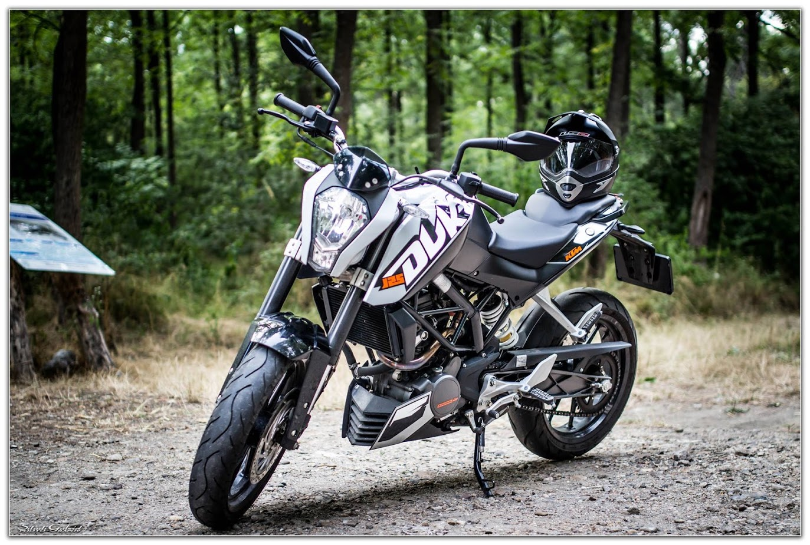

- My motorcycle -
CURRENT MOTORCYCLE:
- • Model: Yamaha XVS 650 A Drag Star Classic 2002
- • Displacement: 649.00 ccm (39.60 cubic inches)
- • Engine type: V2, four-stroke
- • Power: 40.00 HP (29.2 kW) @ 6500 RPM
- • Torque: 50.90 Nm (5.2 kgf-m or 37.5 ft.lbs) @ 3000 RPM
- • Fuel control: Single Overhead Cams (SOHC)

PREVIOUS MOTORCYCLE:
- • Model: KTM 125 Duke
- • Displacement: 125.00 ccm (7.63 cubic inches)
- • Engine type: Single cylinder, four-stroke
- • Power: 15.00 HP (10.9 kW)
- • Lubrication system: Forced oil lubrication with 2 Eaton pumps
- • Clutch: Wet multi-disc clutch / hydraulically operated
